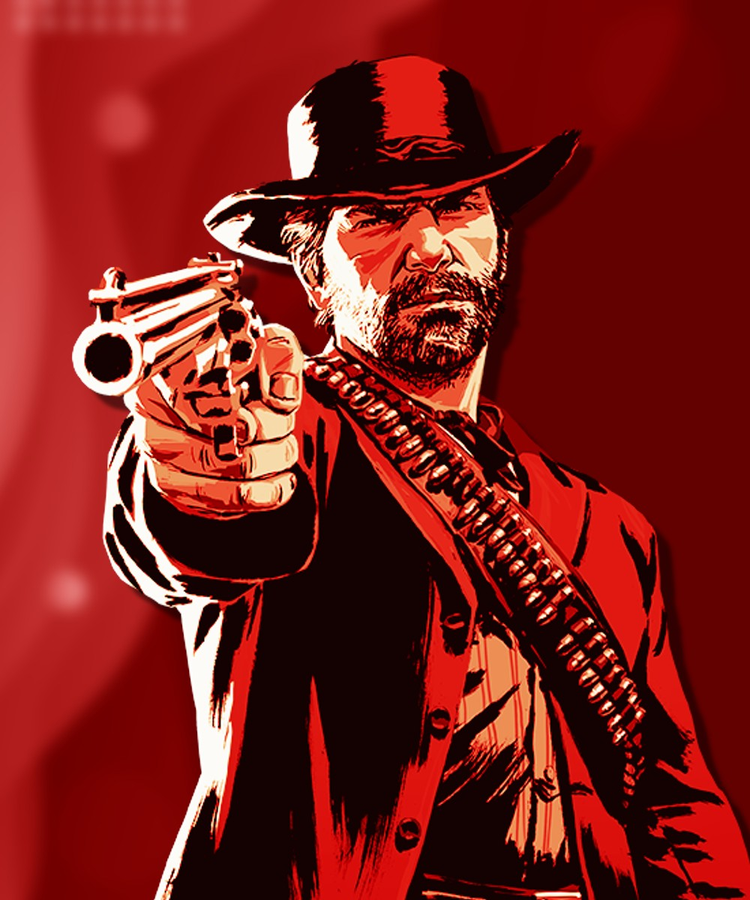
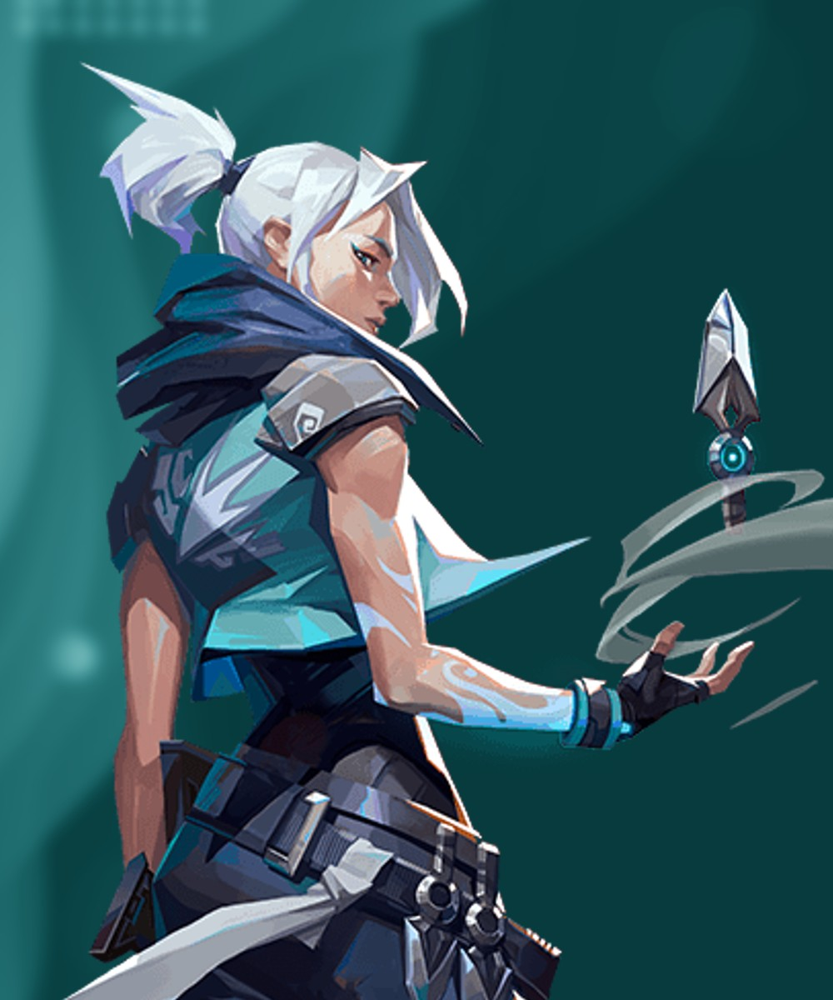

Red Dead Redemption 2
Red Dead Redemption II is een western-action-adventuregame die werd uitgegeven door Rockstar
Games. De game kwam uit op
26 oktober 2018 Het is de derde game in de Red Dead-reeks
en een prequel op Red Dead Redemption uit 2010.
Het spel vindt plaats in het Amerikaanse Westen in 1899. Het richt
zich op het leven van Arthur Morgan en zijn plaats in de beruchte Van der Linde Gang. Verder
wordt de teloorgang van de bende belicht, die niet alleen op de hielen wordt gezeten door de
arm
der wet, maar ook door andere bendes en Pinkertons.
Nadat een bankoverval helemaal verkeerd gaat in Blackwater moet de Van der Linde Gang vluchten. Pinkertons en de beste bountyhunters zitten hen op de hielen. Door onrust en ruzie onder de bendeleden dreigt de bende uiteen te vallen, dus staat Arthur voor de moeilijke keuze tussen zijn eigen idealen en zijn trouw aan de bende die hem heeft grootgebracht.

Valorant
In Valorant nemen twee teams van elk vijf spelers het tegen elkaar op, waarbij zij de rol
aannemen van "agents" die over unieke vaardigheden beschikken. Daarbij wordt gebruik
gemaakt van een economisch systeem om wapens en vaardigheden te kopen. In de klassieke modus
moet het aanvallende team een bom, de "Spike" genaamd, op een bepaalde plek plaatsen.
Verder heeft het spel een deathmatch-modus. dit houdt in dat de speler die als eerste 40
tegenspelers heeft gedood het spel wint. Ook heeft het spel een "spike rush mode". Dit is
eigenlijk hetzelfde als de klassieke mode alleen wint het team dat als eerste 4 rondes wint
en heeft iedereen elke ronde hetzelfde wapen.
Spelers kunnen in het spel ook skins voor de wapens kopen. Deze kunnen gekocht worden door
valorantpunten te kopen met echt geld.

Doom
Doom is ontwikkeld door id Software. De spellen zijn allemaal first person
shooters. Programmer John Carmack deed tijdens de productie van het vervolg op dit spel,
onderzoek naar een verbeterde spelengine voor realistischere 3D-omgevingen.
Het eerste spel, Doom, kwam uit in 1993, en was meteen een succes. Doom werd in 1994
opgevolgd door Doom II: Hell on Earth. Na Doom II zijn er nog een aantal Doom titels
uitgekomen op verschillende platformen.
De eerste twee spellen maakten gebruik van de doom-engine, welke later ook voor andere
spellen werd gebruikt.
De protagonist van alle spellen wordt de Doomguy genoemd. Hij werkt in de meeste gevallen
voor een organisatie genaamd de Union Aerospace Corporation.